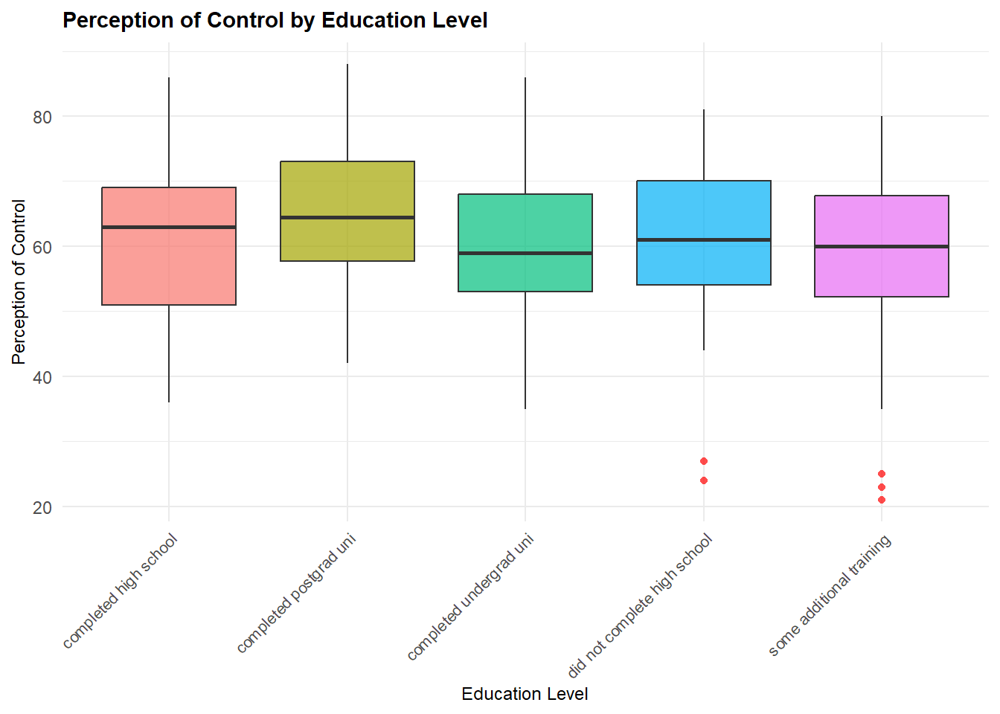
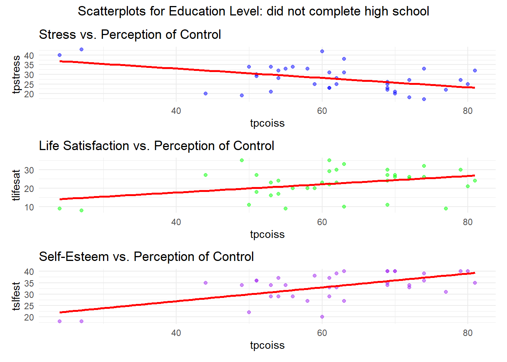
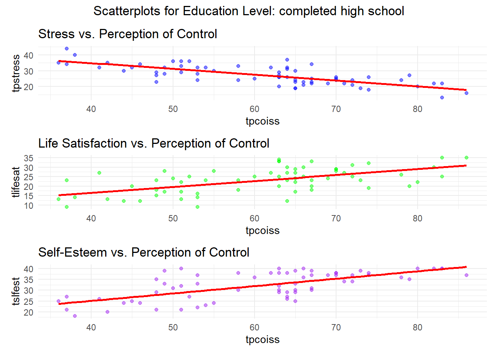

The dataset consists of 439 rows and 134 columns containing the responses from survey respondents. The survey contained a variety of validated scales measuring constructs chosen from the extensive literature on psychological well being. The scales measured respondents’ self-esteem, optimism, perceptions of control, perceived stress, positive and negative affect, life satisfaction and tendency to present themselves in a socially desirable manner. In addition a range of demographic information including gender, marital status, parental status, education level and information on smoking habits was also collected. The concepts of interest in this analysis represent only a subset of the dataset. The concepts of interest, their measurement and statistical type are shown in Table 1:
Concept
Scale Used
Type
Optimism
6 item Life Orientation Test instrument developed by Scheier and Carver (1985)
Continuous - Ratio
Perceived Control of Internal States
18 item PCOISS test instrument developed by Pallant (2000)
Continuous - Ratio
Perceived Stress
10 item Perceived Stress test developed by Cohen, Kamarck and Mermelstein (1983)
Continuous - Ratio
Life Satisfaction
5 item Satisfaction with Life instrument developed by Diener, Emmons, Larson and Griffin (1985)
Continuous
Table 1: Psychological Factors of Interest
In addition demographic data was collected. Of interest to this analysis are respondents age group (18 - 29, 30-44, 45+) and education level (did not complete high school, completed high school,some additional training, completed undergrad uni, completed postgrad uni).
2. Exploration
2.1. Histograms with Denisty Plots (NAs removed)
Code
# Remove all NAs from the dataset to make sure we are working with consistent datasurvey <-na.omit(survey)# Control plotcontrol_plot <-ggplot(survey, aes(x = tpcoiss)) +geom_histogram(aes(y =after_stat(density)), binwidth =1, alpha =0.4, position ='identity', fill="red") +geom_density(alpha =0.7, adjust =1.2) +labs(title ='Perception of Control', x="Total PCOISS") +theme_minimal() +theme(plot.title =element_text(size =10, face ="bold"),axis.title =element_text(size =9),axis.text =element_text(size =8),legend.text =element_text(size =8),plot.margin =margin(5, 10, 5, 5) ) # Stress plotstress_plot <-ggplot(survey, aes(x = tpstress)) +geom_histogram(aes(y =after_stat(density)), binwidth =1, alpha =0.4, position ='identity', fill="blue") +geom_density(alpha =0.7, adjust =1.2) +labs(title ='Stress', x="Total Stress") +theme_minimal() +theme(plot.title =element_text(size =10, face ="bold"),axis.title =element_text(size =9),axis.text =element_text(size =8),legend.text =element_text(size =8),plot.margin =margin(5, 10, 5, 5) ) # Self-esteem plotselfesteem_plot <-ggplot(survey, aes(x = tslfest)) +geom_histogram(aes(y =after_stat(density)), binwidth =1, alpha =0.4, position ='identity', fill="darkgreen") +geom_density(alpha =0.7, adjust =1.2) +labs(title ='Self-Esteem', x="Total Self-Esteem") +theme_minimal() +theme(plot.title =element_text(size =10, face ="bold"),axis.title =element_text(size =9),axis.text =element_text(size =8),legend.text =element_text(size =8),plot.margin =margin(5, 10, 5, 5) )# Life satisfaction plotlifesat_plot <-ggplot(survey, aes(x = tlifesat)) +geom_histogram(aes(y =after_stat(density)), binwidth =1, alpha =0.4, position ='identity', fill="purple") +geom_density(alpha =0.7, adjust =1.2) +labs(title ='Life Satisfaction', x="Total Life Satisfaction") +theme_minimal() +theme(plot.title =element_text(size =10, face ="bold"),axis.title =element_text(size =9),axis.text =element_text(size =8),legend.text =element_text(size =8),plot.margin =margin(5, 10, 5, 5) )# Combine plots with patchwork(control_plot + stress_plot + selfesteem_plot + lifesat_plot) +plot_layout(ncol =2, guides ='collect') +plot_annotation(title ='Histograms with Density Plots: Perception of Control, Stress, Self-Esteem, Life Satisfaction',theme =theme(plot.title =element_text(hjust =0.5, size =11, face ="bold") ) )
2.2 Box Plots
2.1 By Age Group
Code
# Boxplot: Perception of Control by age groupage_plot <-ggplot(survey, aes(x = agegp3, y = tpcoiss, fill = agegp3)) +geom_boxplot(alpha =0.7, outlier.color ="red", outlier.shape =16) +labs(title ="Perception of Control by Age Group", x ="Age Group", y ="Perception of Control") +theme_minimal() +theme(plot.title =element_text(size =11, face ="bold"),axis.title =element_text(size =9),axis.text.x =element_text(angle =45, hjust =1, size =8),legend.position ="none" )age_plot
Code
# Boxplot: Stress by age groupage_plot <-ggplot(survey, aes(x = agegp3, y = tpstress, fill = agegp3)) +geom_boxplot(alpha =0.7, outlier.color ="red", outlier.shape =16) +labs(title ="Stress by Age Group", x ="Age Group", y ="Stress") +theme_minimal() +theme(plot.title =element_text(size =11, face ="bold"),axis.title =element_text(size =9),axis.text.x =element_text(angle =45, hjust =1, size =8),legend.position ="none" )age_plot
Code
# Boxplot: Life Satisfaction by age groupage_plot <-ggplot(survey, aes(x = agegp3, y = tlifesat, fill = agegp3)) +geom_boxplot(alpha =0.7, outlier.color ="red", outlier.shape =16) +labs(title ="Life Satisfaction by Age Group", x ="Age Group", y ="Life Satisfaction") +theme_minimal() +theme(plot.title =element_text(size =11, face ="bold"),axis.title =element_text(size =9),axis.text.x =element_text(angle =45, hjust =1, size =8),legend.position ="none" )age_plot
Code
# Boxplot: Self-esteem by age groupage_plot <-ggplot(survey, aes(x = agegp3, y = tpcoiss, fill = agegp3)) +geom_boxplot(alpha =0.7, outlier.color ="red", outlier.shape =16) +labs(title ="Self-Esteem by Age Group", x ="Age Group", y ="Self Esteem") +theme_minimal() +theme(plot.title =element_text(size =11, face ="bold"),axis.title =element_text(size =9),axis.text.x =element_text(angle =45, hjust =1, size =8),legend.position ="none" )age_plot
2.1 By Educational Level
Code
# Boxplot: Total Control by education leveledu_plot <-ggplot(survey, aes(x = educrec, y = tpcoiss, fill = educrec)) +geom_boxplot(alpha =0.7, outlier.color ="red", outlier.shape =16) +labs(title ="Perception of Control by Education Level", x ="Education Level", y ="Perception of Control") +theme_minimal() +theme(plot.title =element_text(size =11, face ="bold"),axis.title =element_text(size =9),axis.text.x =element_text(angle =45, hjust =1, size =8),legend.position ="none" )edu_plot

Code
# Boxplot: Stress by education leveledu_plot <-ggplot(survey, aes(x = educrec, y = tpstress, fill = educrec)) +geom_boxplot(alpha =0.7, outlier.color ="red", outlier.shape =16) +labs(title ="Stress by Education Level", x ="Education Level", y ="Stress") +theme_minimal() +theme(plot.title =element_text(size =11, face ="bold"),axis.title =element_text(size =9),axis.text.x =element_text(angle =45, hjust =1, size =8),legend.position ="none" )edu_plot
Code
# Boxplot: Life Satisfaction by education leveledu_plot <-ggplot(survey, aes(x = educrec, y = tlifesat, fill = educrec)) +geom_boxplot(alpha =0.7, outlier.color ="red", outlier.shape =16) +labs(title ="Life Satisfaction by Education Level", x ="Education Level", y ="Life Satisfaction") +theme_minimal() +theme(plot.title =element_text(size =11, face ="bold"),axis.title =element_text(size =9),axis.text.x =element_text(angle =45, hjust =1, size =8),legend.position ="none" )edu_plot
Code
# Boxplot: Self-Esteem by education leveledu_plot <-ggplot(survey, aes(x = educrec, y = tslfest, fill = educrec)) +geom_boxplot(alpha =0.7, outlier.color ="red", outlier.shape =16) +labs(title ="Self-Esteem by Education Level", x ="Education Level", y ="Self-Esteem") +theme_minimal() +theme(plot.title =element_text(size =11, face ="bold"),axis.title =element_text(size =9),axis.text.x =element_text(angle =45, hjust =1, size =8),legend.position ="none" )edu_plot
3. Correlation
3.1 Correlation Co-efficients with p-values
3.1.1 Full Dataset
Code
# Function to calculate correlation and p-valuetest_correlation <-function(data) { res <-rcorr(as.matrix(data)) cor_matrix <-round(res$r, 3) p_matrix <-round(res$P, 3)list(correlation = cor_matrix, p_value = p_matrix)}# Full Datasetfull_corr <-test_correlation( survey %>%select(tpcoiss, tpstress, tlifesat, tslfest) %>%rename(Control = tpcoiss,Stress = tpstress,`Life Satisfaction`= tlifesat,`Self-Esteem`= tslfest ))cat("\nFull Dataset Correlations:\n")
Full Dataset Correlations:
Code
print(full_corr)
$correlation
Control Stress Life Satisfaction Self-Esteem
Control 1.000 -0.559 0.376 0.539
Stress -0.559 1.000 -0.528 -0.584
Life Satisfaction 0.376 -0.528 1.000 0.519
Self-Esteem 0.539 -0.584 0.519 1.000
$p_value
Control Stress Life Satisfaction Self-Esteem
Control NA 0 0 0
Stress 0 NA 0 0
Life Satisfaction 0 0 NA 0
Self-Esteem 0 0 0 NA
Age Group: 30 - 44
$correlation
Control Stress Life Satisfaction Self-Esteem
Control 1.000 -0.472 0.296 0.515
Stress -0.472 1.000 -0.495 -0.530
Life Satisfaction 0.296 -0.495 1.000 0.527
Self-Esteem 0.515 -0.530 0.527 1.000
$p_value
Control Stress Life Satisfaction Self-Esteem
Control NA 0 0.001 0
Stress 0.000 NA 0.000 0
Life Satisfaction 0.001 0 NA 0
Self-Esteem 0.000 0 0.000 NA
Age Group: 18 - 29
$correlation
Control Stress Life Satisfaction Self-Esteem
Control 1.000 -0.703 0.542 0.585
Stress -0.703 1.000 -0.639 -0.666
Life Satisfaction 0.542 -0.639 1.000 0.589
Self-Esteem 0.585 -0.666 0.589 1.000
$p_value
Control Stress Life Satisfaction Self-Esteem
Control NA 0 0 0
Stress 0 NA 0 0
Life Satisfaction 0 0 NA 0
Self-Esteem 0 0 0 NA
Age Group: 45+
$correlation
Control Stress Life Satisfaction Self-Esteem
Control 1.000 -0.541 0.317 0.495
Stress -0.541 1.000 -0.463 -0.541
Life Satisfaction 0.317 -0.463 1.000 0.444
Self-Esteem 0.495 -0.541 0.444 1.000
$p_value
Control Stress Life Satisfaction Self-Esteem
Control NA 0 0.001 0
Stress 0.000 NA 0.000 0
Life Satisfaction 0.001 0 NA 0
Self-Esteem 0.000 0 0.000 NA
Education Level: completed undergrad uni
$correlation
Control Stress Life Satisfaction Self-Esteem
Control 1.000 -0.470 0.234 0.320
Stress -0.470 1.000 -0.559 -0.564
Life Satisfaction 0.234 -0.559 1.000 0.540
Self-Esteem 0.320 -0.564 0.540 1.000
$p_value
Control Stress Life Satisfaction Self-Esteem
Control NA 0 0.021 0.001
Stress 0.000 NA 0.000 0.000
Life Satisfaction 0.021 0 NA 0.000
Self-Esteem 0.001 0 0.000 NA
Education Level: did not complete high school
$correlation
Control Stress Life Satisfaction Self-Esteem
Control 1.000 -0.464 0.370 0.628
Stress -0.464 1.000 -0.499 -0.687
Life Satisfaction 0.370 -0.499 1.000 0.608
Self-Esteem 0.628 -0.687 0.608 1.000
$p_value
Control Stress Life Satisfaction Self-Esteem
Control NA 0.004 0.024 0
Stress 0.004 NA 0.002 0
Life Satisfaction 0.024 0.002 NA 0
Self-Esteem 0.000 0.000 0.000 NA
Education Level: some additional training
$correlation
Control Stress Life Satisfaction Self-Esteem
Control 1.000 -0.602 0.374 0.561
Stress -0.602 1.000 -0.505 -0.583
Life Satisfaction 0.374 -0.505 1.000 0.528
Self-Esteem 0.561 -0.583 0.528 1.000
$p_value
Control Stress Life Satisfaction Self-Esteem
Control NA 0 0 0
Stress 0 NA 0 0
Life Satisfaction 0 0 NA 0
Self-Esteem 0 0 0 NA
Education Level: completed high school
$correlation
Control Stress Life Satisfaction Self-Esteem
Control 1.000 -0.739 0.581 0.673
Stress -0.739 1.000 -0.559 -0.673
Life Satisfaction 0.581 -0.559 1.000 0.511
Self-Esteem 0.673 -0.673 0.511 1.000
$p_value
Control Stress Life Satisfaction Self-Esteem
Control NA 0 0 0
Stress 0 NA 0 0
Life Satisfaction 0 0 NA 0
Self-Esteem 0 0 0 NA
Education Level: completed postgrad uni
$correlation
Control Stress Life Satisfaction Self-Esteem
Control 1.000 -0.471 0.437 0.620
Stress -0.471 1.000 -0.526 -0.309
Life Satisfaction 0.437 -0.526 1.000 0.401
Self-Esteem 0.620 -0.309 0.401 1.000
$p_value
Control Stress Life Satisfaction Self-Esteem
Control NA 0.001 0.002 0.000
Stress 0.001 NA 0.000 0.033
Life Satisfaction 0.002 0.000 NA 0.005
Self-Esteem 0.000 0.033 0.005 NA
`geom_smooth()` using formula = 'y ~ x'
`geom_smooth()` using formula = 'y ~ x'
`geom_smooth()` using formula = 'y ~ x'
3.3.2 By Age Group
Code
age_groups <-unique(survey$agegp3)for (ageg in age_groups) { age_data <- survey %>%filter(agegp3 == ageg) %>%select(tpcoiss,tpstress, tlifesat, tslfest) %>%drop_na()if (nrow(age_data) >1) {print(create_scatterplots(age_data, paste("Scatterplots for Age Group:", ageg))) } else {cat(paste("\nAge Group:", age, "- Not enough data for scatterplots\n")) }}
`geom_smooth()` using formula = 'y ~ x'
`geom_smooth()` using formula = 'y ~ x'
`geom_smooth()` using formula = 'y ~ x'
`geom_smooth()` using formula = 'y ~ x'
`geom_smooth()` using formula = 'y ~ x'
`geom_smooth()` using formula = 'y ~ x'
`geom_smooth()` using formula = 'y ~ x'
`geom_smooth()` using formula = 'y ~ x'
`geom_smooth()` using formula = 'y ~ x'
3.3.3 By Education Level
Code
edu_levels <-unique(survey$educrec)for (edu in edu_levels) { edu_data <- survey %>%filter(educrec == edu) %>%select(tpcoiss,tpstress, tlifesat, tslfest) %>%drop_na()if (nrow(edu_data) >1) {print(create_scatterplots(edu_data, paste("Scatterplots for Education Level:", edu))) } else {cat(paste("\nEducation Level:", edu, "- Not enough data for scatterplots\n")) }}
`geom_smooth()` using formula = 'y ~ x'
`geom_smooth()` using formula = 'y ~ x'
`geom_smooth()` using formula = 'y ~ x'
`geom_smooth()` using formula = 'y ~ x'
`geom_smooth()` using formula = 'y ~ x'
`geom_smooth()` using formula = 'y ~ x'

`geom_smooth()` using formula = 'y ~ x'
`geom_smooth()` using formula = 'y ~ x'
`geom_smooth()` using formula = 'y ~ x'
`geom_smooth()` using formula = 'y ~ x'
`geom_smooth()` using formula = 'y ~ x'
`geom_smooth()` using formula = 'y ~ x'

`geom_smooth()` using formula = 'y ~ x'
`geom_smooth()` using formula = 'y ~ x'
`geom_smooth()` using formula = 'y ~ x'
4. QQ Plots for Stress, Life Satisfaction, and Self-Esteem
Code
# Function to create QQ plotsgenerate_qqplot <-function(data, variable, title) {ggplot(data, aes(sample =!!sym(variable))) +stat_qq() +stat_qq_line(color ="blue") +labs(title = title, x ="Theoretical Quantiles", y ="Sample Quantiles") +theme_minimal()}# Generate QQ plotscontrol_qq <-generate_qqplot(survey, "tpcoiss", "QQ Plot for Perception of Control")stress_qq <-generate_qqplot(survey, "tpstress", "QQ Plot for Stress")lifesat_qq <-generate_qqplot(survey, "tlifesat", "QQ Plot for Life Satisfaction")selfesteem_qq <-generate_qqplot(survey, "tslfest", "QQ Plot for Self-Esteem")# Display QQ plots / is vertical separator, | is horizontal separator (control_qq | stress_qq) /(lifesat_qq | selfesteem_qq) + patchwork::plot_annotation(title ="QQ Plots for Perception of Control, Stress, Life Satisfaction, and Self-Esteem",theme =theme(plot.title =element_text(hjust =0.5)) )
Appendix 1: How to conduct other types of correlation test
Note: This is included for illustration only. If your data cannot be treated as approximately normal then you need to use a non-parametric test. You should choose either Spearman or Kendall. Either is fine. Some sources consider Kendall to be more robust than Spearman.
Code
# Create a matrix with Spearman data <-survey %>%select(tpcoiss, tpstress, tlifesat, tslfest)res <- Hmisc::rcorr(as.matrix(data), type ="spearman")cat ("Spearman Correlations co-efficients: ")
tpcoiss tpstress tlifesat tslfest
tpcoiss NA 0 7.171153e-12 0
tpstress 0.000000e+00 NA 0.000000e+00 0
tlifesat 7.171153e-12 0 NA 0
tslfest 0.000000e+00 0 0.000000e+00 NA
Appendix 2: 3D Scatterplot
Code
# Create a 3D bubble plot with adjusted size scalingplot_ly(data = survey, x =~tpcoiss, y =~tpstress, z =~agegp3, # Replace with another variable if neededtype ="scatter3d", mode ="markers",marker =list(size =~tpstress /max(tpstress, na.rm =TRUE) *10, # Adjust bubble sizecolor =~tpstress, colorscale ="Viridis", opacity =0.8 )) %>%layout(scene =list(xaxis =list(title ="Control"),yaxis =list(title ="Stress"),zaxis =list(title ="Age Group") # Change this if needed ))
Appendix 3: Heat Map Categorical Data
Code
# Precompute count of each combinationheatmap_data <- survey %>%count(educrec, agegp5) # Count occurrences# Create heatmapggplot(heatmap_data, aes(x = educrec, y = agegp5, fill = n)) +geom_tile() +# Create the heatmapscale_fill_gradient(low ="blue", high ="red") +# Adjust color scalelabs(x ="Education Received", y ="Age Group", fill ="Count") +theme_minimal() +theme(axis.text.x =element_text(angle =45, hjust =1)) # Rotate x-axis labels
References
Cohen, S., Kamarck, T. & Mermelstein, R. (1983). A global measure of perceived stress. Journal of Health and Social Behavior, 24, 385–96.
Cohen, J. (1988). Statistical power analysis for the behavioral sciences (2nd ed.). Hillside, NJ: Lawrence Erlbaum Associates.
Crowne, D.P. & Marlowe, D. (1960). A new scale of social desirability independent of psychopathology. Journal of Consulting Psychology, 24, 349–54.
Curran, Patrick J., Stephen G. West, and John F. Finch. (1996). “The robustness of test statistics to nonnormality and specification error in confirmatory factor analysis.†Psychological methods 1.1 (1996): 16.Diener, E., Emmons, R.A., Larson, R.J. & Griffin, S. (1985). The Satisfaction with Life scale. Journal of Personality Assessment, 49, 71–6.
Field, A., Field Z. & Miles J.(2012). Discovering statistics using IBM SPSS statistics. Sage publications limited,
Pallant, J. (2000). Development and validation of a scale to measure perceived control of internal states. Journal of Personality Assessment, 75, 2, 308–37. Pearlin, L. & Schooler, C. (1978). The structure of coping. Journal of Health and Social Behavior, 19, 2–21.
Rosenberg, M. (1965). Society and the adolescent self-image. Princeton, NJ: Princeton University Press.
Scheier, M.F. & Carver, C.S. (1985). Optimism, coping and health: An assessment and implications of generalized outcome expectancies. Health Psychology, 4, 219–47.
Watson, D., Clark, L.A. & Tellegen, A. (1988). Development and validation of brief measures of positive and negative affect: The PANAS scales. Journal of Personality and Social Psychology, 54, 1063–70.
Source Code
---title: "CMPU4091 Visualising Data"subtitle: "Correlation"author: "Deirdre Lawless"format: html: code-fold: true code-tools: true css: "./styles.css"editor: visual---```{r setup, include="FALSE"}#Setting include to FALSE on this chunk so that it doesn't appear in the output# Load necessary librariesoptions(repos = c(CRAN = "https://cloud.r-project.org"))if (!require("tidyverse")) install.packages("tidyverse", dependencies = TRUE)if (!require("cowplot")) install.packages("cowplot", dependencies = TRUE)if (!require("plotly")) install.packages("plotly", dependencies = TRUE)if (!require("ggcorrplot")) install.packages("ggcorrplot", dependencies = TRUE)if (!require("pastecs")) install.packages("pastecs", dependencies = TRUE)if (!require("PerformanceAnalytics")) install.packages("PerformanceAnalytics", dependencies = TRUE)if (!require("patchwork")) install.packages("patchwork", dependencies = TRUE)if (!require("Hmisc")) install.packages("Hmisc", dependencies = TRUE)if (!require("corrplot")) install.packages("corrplot", dependencies = TRUE)library(tidyverse) # Tools for wrangling datalibrary(cowplot) # For organising plots into a gridlibrary(patchwork) # For matrix layoutlibrary(plotly) # For Animating plotslibrary(ggcorrplot) # For Correlation Heatmaps library(corrplot) # For correlation matriceslibrary(PerformanceAnalytics)# For standardised skewness and kurtosislibrary(Hmisc) # For generating correlation#We are using a file created from the SPSS file survey.sav taken from SPSS Survival Manual 6th Edition Julie Pallant (http://spss.allenandunwin.com.s3-website-ap-southeast-2.amazonaws.com/data-files.html#.Wb0vvnWP-po). #This has been saved to a .dat format - more easily readable in R.# Load dataset - format the location using file.path to ensure it will locate it correctlymydata <- file.path("C:/Users/Matt/Desktop/VisualizingDataRModule/Week4")datapath <- file.path(mydata,'survey.dat')#Load it into the dataframe called survey (.dat file so use read.Table)survey <- read.table(datapath)#Setting the column names to be that used in the dataset but in lowercase to make life a bit easiercolnames(survey) <- tolower(colnames(survey))```# 1. Introduction<p>The dataset consists of 439 rows and 134 columns containing the responses from survey respondents. The survey contained a variety of validated scales measuring constructs chosen from the extensive literature on psychological well being. The scales measured respondents' self-esteem, optimism, perceptions of control, perceived stress, positive and negative affect, life satisfaction and tendency to present themselves in a socially desirable manner. In addition a range of demographic information including gender, marital status, parental status, education level and information on smoking habits was also collected. The concepts of interest in this analysis represent only a subset of the dataset. The concepts of interest, their measurement and statistical type are shown in Table 1:</p>| Concept | Scale Used | Type ||--------------------|---------------------------------|-------------------|| Optimism | 6 item Life Orientation Test instrument developed by Scheier and Carver (1985) | Continuous - Ratio || Perceived Control of Internal States | 18 item PCOISS test instrument developed by Pallant (2000) | Continuous - Ratio || Perceived Stress | 10 item Perceived Stress test developed by Cohen, Kamarck and Mermelstein (1983) | Continuous - Ratio || Life Satisfaction | 5 item Satisfaction with Life instrument developed by Diener, Emmons, Larson and Griffin (1985) | Continuous |<p align="center">**Table 1: Psychological Factors of Interest**</p>In addition demographic data was collected. Of interest to this analysis are respondents age group (18 - 29, 30-44, 45+) and education level (did not complete high school, completed high school,some additional training, completed undergrad uni, completed postgrad uni).# 2. Exploration# 2.1. Histograms with Denisty Plots (NAs removed)```{r}# Remove all NAs from the dataset to make sure we are working with consistent datasurvey <-na.omit(survey)# Control plotcontrol_plot <-ggplot(survey, aes(x = tpcoiss)) +geom_histogram(aes(y =after_stat(density)), binwidth =1, alpha =0.4, position ='identity', fill="red") +geom_density(alpha =0.7, adjust =1.2) +labs(title ='Perception of Control', x="Total PCOISS") +theme_minimal() +theme(plot.title =element_text(size =10, face ="bold"),axis.title =element_text(size =9),axis.text =element_text(size =8),legend.text =element_text(size =8),plot.margin =margin(5, 10, 5, 5) ) # Stress plotstress_plot <-ggplot(survey, aes(x = tpstress)) +geom_histogram(aes(y =after_stat(density)), binwidth =1, alpha =0.4, position ='identity', fill="blue") +geom_density(alpha =0.7, adjust =1.2) +labs(title ='Stress', x="Total Stress") +theme_minimal() +theme(plot.title =element_text(size =10, face ="bold"),axis.title =element_text(size =9),axis.text =element_text(size =8),legend.text =element_text(size =8),plot.margin =margin(5, 10, 5, 5) ) # Self-esteem plotselfesteem_plot <-ggplot(survey, aes(x = tslfest)) +geom_histogram(aes(y =after_stat(density)), binwidth =1, alpha =0.4, position ='identity', fill="darkgreen") +geom_density(alpha =0.7, adjust =1.2) +labs(title ='Self-Esteem', x="Total Self-Esteem") +theme_minimal() +theme(plot.title =element_text(size =10, face ="bold"),axis.title =element_text(size =9),axis.text =element_text(size =8),legend.text =element_text(size =8),plot.margin =margin(5, 10, 5, 5) )# Life satisfaction plotlifesat_plot <-ggplot(survey, aes(x = tlifesat)) +geom_histogram(aes(y =after_stat(density)), binwidth =1, alpha =0.4, position ='identity', fill="purple") +geom_density(alpha =0.7, adjust =1.2) +labs(title ='Life Satisfaction', x="Total Life Satisfaction") +theme_minimal() +theme(plot.title =element_text(size =10, face ="bold"),axis.title =element_text(size =9),axis.text =element_text(size =8),legend.text =element_text(size =8),plot.margin =margin(5, 10, 5, 5) )# Combine plots with patchwork(control_plot + stress_plot + selfesteem_plot + lifesat_plot) +plot_layout(ncol =2, guides ='collect') +plot_annotation(title ='Histograms with Density Plots: Perception of Control, Stress, Self-Esteem, Life Satisfaction',theme =theme(plot.title =element_text(hjust =0.5, size =11, face ="bold") ) )```## 2.2 Box Plots## 2.1 By Age Group```{r}# Boxplot: Perception of Control by age groupage_plot <-ggplot(survey, aes(x = agegp3, y = tpcoiss, fill = agegp3)) +geom_boxplot(alpha =0.7, outlier.color ="red", outlier.shape =16) +labs(title ="Perception of Control by Age Group", x ="Age Group", y ="Perception of Control") +theme_minimal() +theme(plot.title =element_text(size =11, face ="bold"),axis.title =element_text(size =9),axis.text.x =element_text(angle =45, hjust =1, size =8),legend.position ="none" )age_plot# Boxplot: Stress by age groupage_plot <-ggplot(survey, aes(x = agegp3, y = tpstress, fill = agegp3)) +geom_boxplot(alpha =0.7, outlier.color ="red", outlier.shape =16) +labs(title ="Stress by Age Group", x ="Age Group", y ="Stress") +theme_minimal() +theme(plot.title =element_text(size =11, face ="bold"),axis.title =element_text(size =9),axis.text.x =element_text(angle =45, hjust =1, size =8),legend.position ="none" )age_plot# Boxplot: Life Satisfaction by age groupage_plot <-ggplot(survey, aes(x = agegp3, y = tlifesat, fill = agegp3)) +geom_boxplot(alpha =0.7, outlier.color ="red", outlier.shape =16) +labs(title ="Life Satisfaction by Age Group", x ="Age Group", y ="Life Satisfaction") +theme_minimal() +theme(plot.title =element_text(size =11, face ="bold"),axis.title =element_text(size =9),axis.text.x =element_text(angle =45, hjust =1, size =8),legend.position ="none" )age_plot# Boxplot: Self-esteem by age groupage_plot <-ggplot(survey, aes(x = agegp3, y = tpcoiss, fill = agegp3)) +geom_boxplot(alpha =0.7, outlier.color ="red", outlier.shape =16) +labs(title ="Self-Esteem by Age Group", x ="Age Group", y ="Self Esteem") +theme_minimal() +theme(plot.title =element_text(size =11, face ="bold"),axis.title =element_text(size =9),axis.text.x =element_text(angle =45, hjust =1, size =8),legend.position ="none" )age_plot```## 2.1 By Educational Level```{r}# Boxplot: Total Control by education leveledu_plot <-ggplot(survey, aes(x = educrec, y = tpcoiss, fill = educrec)) +geom_boxplot(alpha =0.7, outlier.color ="red", outlier.shape =16) +labs(title ="Perception of Control by Education Level", x ="Education Level", y ="Perception of Control") +theme_minimal() +theme(plot.title =element_text(size =11, face ="bold"),axis.title =element_text(size =9),axis.text.x =element_text(angle =45, hjust =1, size =8),legend.position ="none" )edu_plot# Boxplot: Stress by education leveledu_plot <-ggplot(survey, aes(x = educrec, y = tpstress, fill = educrec)) +geom_boxplot(alpha =0.7, outlier.color ="red", outlier.shape =16) +labs(title ="Stress by Education Level", x ="Education Level", y ="Stress") +theme_minimal() +theme(plot.title =element_text(size =11, face ="bold"),axis.title =element_text(size =9),axis.text.x =element_text(angle =45, hjust =1, size =8),legend.position ="none" )edu_plot# Boxplot: Life Satisfaction by education leveledu_plot <-ggplot(survey, aes(x = educrec, y = tlifesat, fill = educrec)) +geom_boxplot(alpha =0.7, outlier.color ="red", outlier.shape =16) +labs(title ="Life Satisfaction by Education Level", x ="Education Level", y ="Life Satisfaction") +theme_minimal() +theme(plot.title =element_text(size =11, face ="bold"),axis.title =element_text(size =9),axis.text.x =element_text(angle =45, hjust =1, size =8),legend.position ="none" )edu_plot# Boxplot: Self-Esteem by education leveledu_plot <-ggplot(survey, aes(x = educrec, y = tslfest, fill = educrec)) +geom_boxplot(alpha =0.7, outlier.color ="red", outlier.shape =16) +labs(title ="Self-Esteem by Education Level", x ="Education Level", y ="Self-Esteem") +theme_minimal() +theme(plot.title =element_text(size =11, face ="bold"),axis.title =element_text(size =9),axis.text.x =element_text(angle =45, hjust =1, size =8),legend.position ="none" )edu_plot```# 3. Correlation### 3.1 Correlation Co-efficients with p-values#### 3.1.1 Full Dataset```{r}# Function to calculate correlation and p-valuetest_correlation <-function(data) { res <-rcorr(as.matrix(data)) cor_matrix <-round(res$r, 3) p_matrix <-round(res$P, 3)list(correlation = cor_matrix, p_value = p_matrix)}# Full Datasetfull_corr <-test_correlation( survey %>%select(tpcoiss, tpstress, tlifesat, tslfest) %>%rename(Control = tpcoiss,Stress = tpstress,`Life Satisfaction`= tlifesat,`Self-Esteem`= tslfest ))cat("\nFull Dataset Correlations:\n")print(full_corr)```#### 3.1.2 By Age Group```{r}for (ageg inunique(survey$agegp3)) { age_data <- survey %>%filter(agegp3 == ageg) %>%select(tpcoiss,tpstress, tlifesat, tslfest) %>%rename(Control = tpcoiss,Stress = tpstress,`Life Satisfaction`= tlifesat,`Self-Esteem`= tslfest )if (nrow(age_data) >1) { age_corr <-test_correlation(age_data)cat(paste("\nAge Group:", ageg, "\n"))print(age_corr) }}```#### 3.1.3 By Education Level```{r}for (edu inunique(survey$educrec)) { edu_data <- survey %>%filter(educrec == edu) %>%select(tpcoiss,tpstress, tlifesat, tslfest) %>%rename(Control = tpcoiss,Stress = tpstress,`Life Satisfaction`= tlifesat,`Self-Esteem`= tslfest )if (nrow(edu_data) >1) { edu_corr <-test_correlation(edu_data)cat(paste("\nEducation Level:", edu, "\n"))print(edu_corr) }}```## 3.2 Correlation Heatmaps### 3.2.1 Overall Heatmap```{r}# 1. OVerall heatmapcreate_heatmap <-function(data, title) {# Calculate correlation matrix corr_matrix <-cor(data, use ="complete.obs")# Plot heatmapggcorrplot(corr_matrix, type ="lower", lab =TRUE, lab_size =3, colors =c("#6D9EC1", "white", "#E46726"), title = title, ggtheme =theme_minimal()) +theme(plot.title =element_text(hjust =0.5, size =14, face ="bold"))}overall_data <- survey %>%select(tpcoiss,tpstress, tlifesat, tslfest) %>%rename(Control = tpcoiss,Stress = tpstress,`Life Satisfaction`= tlifesat,`Self-Esteem`= tslfest )create_heatmap(overall_data, "Overall Correlations")```### 3.2.2. Correlation Heatmap by Age Group```{r}# 2. Correlation by Age Groupage_groups <-unique(survey$agegp3)for (ageg in age_groups) { age_data <- survey %>%filter(agegp3 == ageg) %>%select(tpcoiss,tpstress, tlifesat, tslfest) %>%rename(Control = tpcoiss,Stress = tpstress,`Life Satisfaction`= tlifesat,`Self-Esteem`= tslfest )if (nrow(age_data) >1) {print(create_heatmap(age_data, paste("Correlations for Age Group:", ageg))) } else {cat(paste("\nAge Group:", ageg, "- Not enough data for heatmap\n")) }}```### 3.2.3 By Education Level```{r}# 3. Correlation by Education Leveledu_levels <-unique(survey$educrec)for (edu in edu_levels) { edu_data <- survey %>%filter(educrec == edu) %>%select(tpcoiss,tpstress, tlifesat, tslfest) %>%rename(Control = tpcoiss,Stress = tpstress,`Life Satisfaction`= tlifesat,`Self-Esteem`= tslfest )if (nrow(edu_data) >1) {print(create_heatmap(edu_data, paste("Correlations for Education Level:", edu))) } else {cat(paste("\nEducation Level:", edu, "- Not enough data for heatmap\n")) }}```## 3.3 Scatterplots### 3.3.1 Overall Data```{r}create_scatterplots <-function(data, title) { p1 <-ggplot(data, aes(x = tpcoiss, y = tpstress)) +geom_point(alpha =0.5, color ="blue") +geom_smooth(method ="lm", color ="red", se =FALSE) +labs(title ="Stress vs. Perception of Control") +theme_minimal() p2 <-ggplot(data, aes(x = tpcoiss, y = tlifesat)) +geom_point(alpha =0.5, color ="green") +geom_smooth(method ="lm", color ="red", se =FALSE) +labs(title ="Life Satisfaction vs. Perception of Control") +theme_minimal() p3 <-ggplot(data, aes(x = tpcoiss, y = tslfest)) +geom_point(alpha =0.5, color ="purple") +geom_smooth(method ="lm", color ="red", se =FALSE) +labs(title ="Self-Esteem vs. Perception of Control") +theme_minimal()# Combine plots using patchwork (p1 / p2 / p3) + patchwork::plot_annotation(title = title, theme =theme(plot.title =element_text(hjust =0.5)))}``````{r}overall_data <- survey %>%select(tpcoiss,tpstress, tlifesat, tslfest) %>%drop_na()create_scatterplots(overall_data, "Overall Scatterplots")```### 3.3.2 By Age Group```{r}age_groups <-unique(survey$agegp3)for (ageg in age_groups) { age_data <- survey %>%filter(agegp3 == ageg) %>%select(tpcoiss,tpstress, tlifesat, tslfest) %>%drop_na()if (nrow(age_data) >1) {print(create_scatterplots(age_data, paste("Scatterplots for Age Group:", ageg))) } else {cat(paste("\nAge Group:", age, "- Not enough data for scatterplots\n")) }}```### 3.3.3 By Education Level```{r}edu_levels <-unique(survey$educrec)for (edu in edu_levels) { edu_data <- survey %>%filter(educrec == edu) %>%select(tpcoiss,tpstress, tlifesat, tslfest) %>%drop_na()if (nrow(edu_data) >1) {print(create_scatterplots(edu_data, paste("Scatterplots for Education Level:", edu))) } else {cat(paste("\nEducation Level:", edu, "- Not enough data for scatterplots\n")) }}```# 4. QQ Plots for Stress, Life Satisfaction, and Self-Esteem```{r}# Function to create QQ plotsgenerate_qqplot <-function(data, variable, title) {ggplot(data, aes(sample =!!sym(variable))) +stat_qq() +stat_qq_line(color ="blue") +labs(title = title, x ="Theoretical Quantiles", y ="Sample Quantiles") +theme_minimal()}# Generate QQ plotscontrol_qq <-generate_qqplot(survey, "tpcoiss", "QQ Plot for Perception of Control")stress_qq <-generate_qqplot(survey, "tpstress", "QQ Plot for Stress")lifesat_qq <-generate_qqplot(survey, "tlifesat", "QQ Plot for Life Satisfaction")selfesteem_qq <-generate_qqplot(survey, "tslfest", "QQ Plot for Self-Esteem")# Display QQ plots / is vertical separator, | is horizontal separator (control_qq | stress_qq) /(lifesat_qq | selfesteem_qq) + patchwork::plot_annotation(title ="QQ Plots for Perception of Control, Stress, Life Satisfaction, and Self-Esteem",theme =theme(plot.title =element_text(hjust =0.5)) )```# Appendix 1: How to conduct other types of correlation testNote: This is included for illustration only. If your data cannot be treated as approximately normal then you need to use a non-parametric test. You should choose either Spearman or Kendall. Either is fine. Some sources consider Kendall to be more robust than Spearman.```{r other-tests}# Create a matrix with Spearman data <-survey %>% select(tpcoiss, tpstress, tlifesat, tslfest)res <- Hmisc::rcorr(as.matrix(data), type = "spearman")cat ("Spearman Correlations co-efficients: ")res$rcat ("Spearman Correlations p-values: ")res$P```# Appendix 2: 3D Scatterplot```{r}# Create a 3D bubble plot with adjusted size scalingplot_ly(data = survey, x =~tpcoiss, y =~tpstress, z =~agegp3, # Replace with another variable if neededtype ="scatter3d", mode ="markers",marker =list(size =~tpstress /max(tpstress, na.rm =TRUE) *10, # Adjust bubble sizecolor =~tpstress, colorscale ="Viridis", opacity =0.8 )) %>%layout(scene =list(xaxis =list(title ="Control"),yaxis =list(title ="Stress"),zaxis =list(title ="Age Group") # Change this if needed ))```# Appendix 3: Heat Map Categorical Data```{r}# Precompute count of each combinationheatmap_data <- survey %>%count(educrec, agegp5) # Count occurrences# Create heatmapggplot(heatmap_data, aes(x = educrec, y = agegp5, fill = n)) +geom_tile() +# Create the heatmapscale_fill_gradient(low ="blue", high ="red") +# Adjust color scalelabs(x ="Education Received", y ="Age Group", fill ="Count") +theme_minimal() +theme(axis.text.x =element_text(angle =45, hjust =1)) # Rotate x-axis labels```# ReferencesCohen, S., Kamarck, T. & Mermelstein, R. (1983). A global measure of perceived stress. Journal of Health and Social Behavior, 24, 385–96.\Cohen, J. (1988). Statistical power analysis for the behavioral sciences (2nd ed.). Hillside, NJ: Lawrence Erlbaum Associates.\Crowne, D.P. & Marlowe, D. (1960). A new scale of social desirability independent of psychopathology. Journal of Consulting Psychology, 24, 349–54.\Curran, Patrick J., Stephen G. West, and John F. Finch. (1996). "The robustness of test statistics to nonnormality and specification error in confirmatory factor analysis." Psychological methods 1.1 (1996): 16.Diener, E., Emmons, R.A., Larson, R.J. & Griffin, S. (1985). The Satisfaction with Life scale. Journal of Personality Assessment, 49, 71–6.\Field, A., Field Z. & Miles J.(2012). Discovering statistics using IBM SPSS statistics. Sage publications limited,\Pallant, J. (2000). Development and validation of a scale to measure perceived control of internal states. Journal of Personality Assessment, 75, 2, 308–37. Pearlin, L. & Schooler, C. (1978). The structure of coping. Journal of Health and Social Behavior, 19, 2–21.\Rosenberg, M. (1965). Society and the adolescent self-image. Princeton, NJ: Princeton University Press.\Scheier, M.F. & Carver, C.S. (1985). Optimism, coping and health: An assessment and implications of generalized outcome expectancies. Health Psychology, 4, 219–47.\Watson, D., Clark, L.A. & Tellegen, A. (1988). Development and validation of brief measures of positive and negative affect: The PANAS scales. Journal of Personality and Social Psychology, 54, 1063–70.\